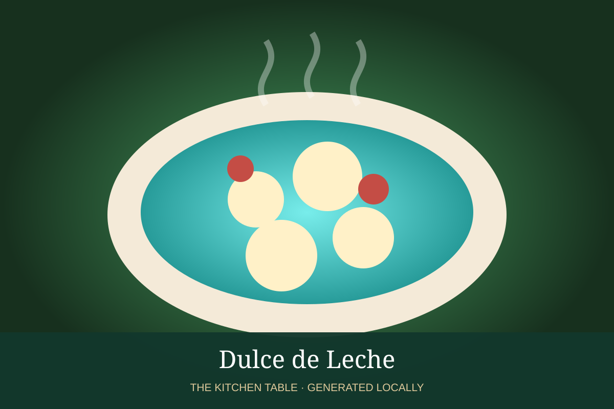

MEXICAN · DESSERTS & DRINKS
Dulce de Leche
Slow-cooked milk caramel with a deep dairy sweetness and silky texture.

Ingredients
- 4 cups whole milk
- 1 1/4 cups sugar
- 1/4 tsp baking soda
- 1 tsp vanilla
Method
- Combine milk, sugar, and baking soda in a heavy pot.
- Simmer very gently, stirring increasingly often as it darkens.
- Cook until thick, glossy, and caramel-colored.
- Remove from heat and stir in vanilla; cool.